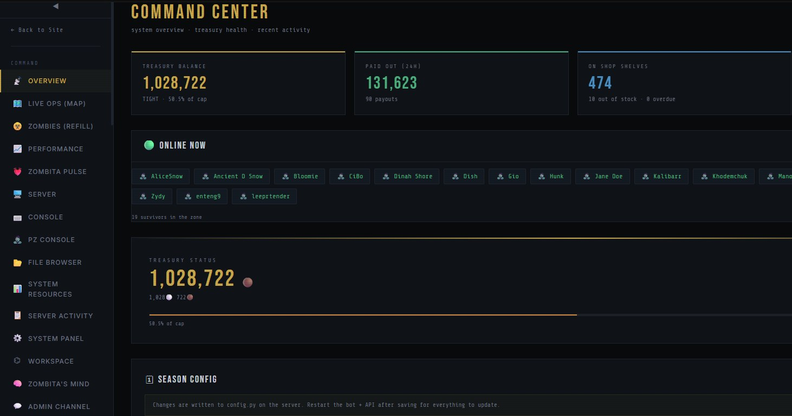
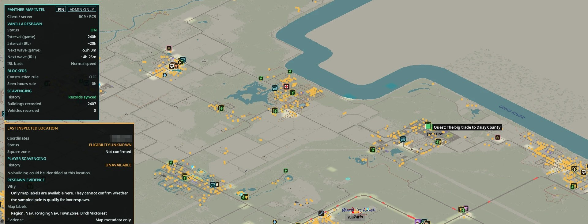
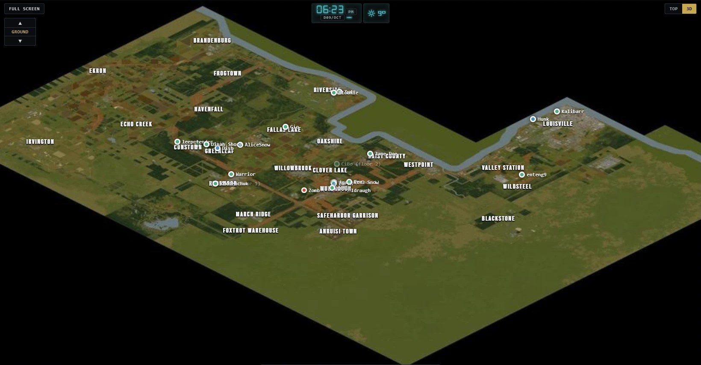
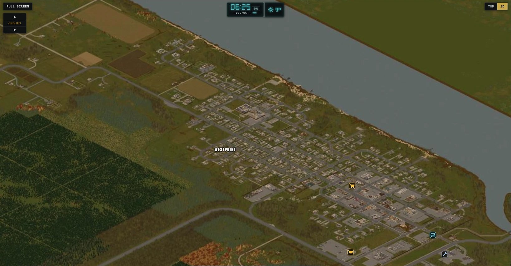
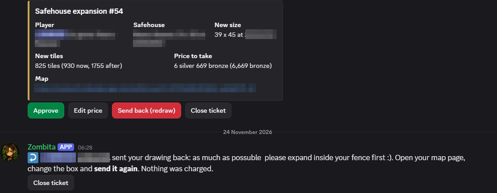
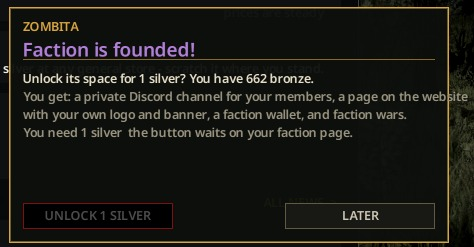
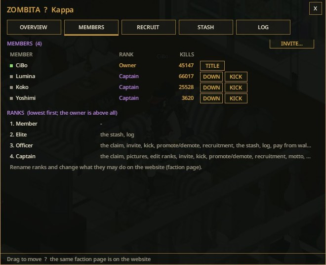
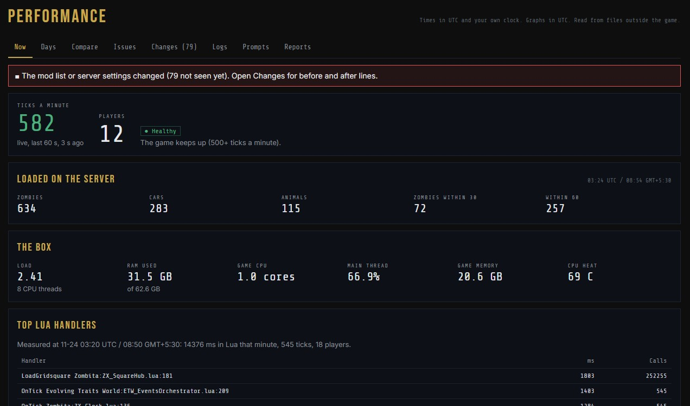

Live ops from the browser
Most of the game runs from the website. The Live Ops page is a live 3D map of the server with every player, car, safehouse, shop, job spot and world event on it, and a side panel that acts on any of them in the running game. Most admin actions that exist in game have a web control too, so the world runs and gets fixed without anyone logging in.



Not every tool is mine. Two come from Sheo, one of my fellow admins. Panther, the server's loot balancer and admin map intel, is hers, and so is Labyrinth Zero, a timed maze with records, a podium and a pick of rewards for the first finisher. It shows the loot respawn timers, what blocks a respawn, and which buildings players have already searched. Zombita's job and quest markers share the same map.



The public 3D map
Players get their own version of the map on the website. It zooms from the whole server down to the furniture inside each house, shows who is online and where, the shops, bus stations and the diner, and the current world event. It follows the game's clock and weather: dawn, evening and night looks, sunrise and sunset moving with the month, and rain, snow, fog and lightning when the game has them. Player bases are redrawn on the map as they build.



The admin workspace
My admins plan and run the server in a workspace I built into the site, which works like Google Docs and Sheets. It has four kinds of document: rich-text docs, spreadsheets, kanban boards, and the server's own config files. Everything syncs live through my own WebSocket relay on Yjs, so when two admins edit the same page they see each other's cursors and changes as they type. Every document keeps a change log and versions that can be rolled back.
The config editor is the careful one. The live copy of servertest.ini or SandboxVars.lua is only a draft. Nothing touches the real file until an admin saves, the backend checks the syntax, and only then writes it, so a broken merge can never reach the running server.

Safehouse tickets
Players grow their safehouses through a ticket. Zombita opens a private Discord channel with a link to the player's own map page, where they drag the edges of their safehouse box out on the live 3D map and see the tile count and the price change as they drag. The page enforces the rules: a new tile next to the old boundary costs 2 bronze, each row further out costs 1 more per tile, the biggest safehouse is 59 x 49, and it can never touch another safehouse.
When the player sends it, a card lands in the channel with Approve, Edit price and Send back. Nothing leaves the player's wallet until an admin approves, and a sent-back drawing comes with the admin's note so the player can redraw. The same page turns a safehouse into a faction safehouse, which needs both the owner and the faction's leaders to agree before an admin approves it.


Faction channels
When players form a faction in game, Zombita opens a private Discord channel and voice room for it and keeps the door: whoever joins or leaves the faction in game is added to or removed from the channel, and she posts each new member and who recruited them. Every faction also gets its own page on the site to set a logo and banner, and the logo shows on the in-game F8 board too.





Performance from the outside
The Perf page reads the server from files outside the game, so it keeps working when the game is struggling. It shows ticks a minute against the 500 the game needs to keep up, what is loaded (zombies, cars, animals, and zombies near players), the box's load, memory and CPU heat, and the Lua handlers that cost the most time in the last minute, from my own profiler that wraps every mod's event handlers. Its Changes tab shows what changed in the mod list or server settings, before and after, so a slow evening can be traced back to its cause.
